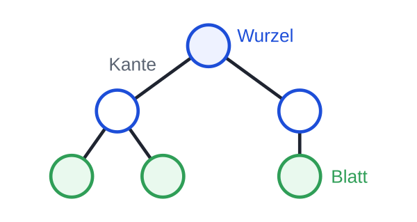

Die Ordner auf deinem Rechner, ein Stammbaum oder das Organigramm einer Firma haben dieselbe Form: Von einem Ausgangspunkt verzweigt sich alles immer weiter. In der Informatik heißt diese Struktur Baum – allerdings wächst er von oben nach unten.
Bäume sind in der Informatik wichtig, weil sie hierarchische Beziehungen abbilden und effizientes Suchen, Sortieren, Einfügen und Löschen ermöglichen.
Diese Seite ist ein Lernpfad in fünf kurzen Schritten. Jeder Schritt hat dieselbe Form: Erst liest du kurz, worum es geht, dann zeigt dir ein Video (1–2 min, ohne Ton) die Idee und den Code in Thonny, dann prüfst du mit einer kleinen Frage, ob du es verstanden hast. Halte die Videos ruhig an und tippe in Thonny mit. Die Schritte 3 und 4 führen dich in die Rekursion ein – nimm dir dafür Zeit.
KnotenZum Mittippen: 2_baeume/baum.py – neu anlegen, weiter in Aufgabe 3.4.3.
Commit nach jedem Schritt mit Code, z. B. 3.4 Schritt 2: Klasse Knoten, Beispielbaum aufgebaut · 3.4 Schritt 3: hoehe rekursiv (Regeln auf Seite 3.0.2)
Danach findest du besondere Typen von Bäumen, einen Praxisbezug und die Übungsaufgaben.
Über Bäume spricht man mit wenigen festen Begriffen: Wurzel, Kinder und Elternknoten, Geschwister, Blätter, Teilbaum, Tiefe, Höhe und Ebenen. Im Video siehst du alle an einem Beispielbaum. Achte besonders auf den Unterschied zwischen der Tiefe eines Knotens und der Höhe des ganzen Baums – beide zählen Kanten, nicht Knoten.
Zum Nachlesen: alle Begriffe im Überblick.

R
/ \
S T
|
U
/ \
V WGib die Blätter und die Geschwister von S an. Bestimme die Tiefe von V, die Höhe des Baums und die Anzahl der Ebenen.
Blätter: T, V, W. Geschwister von S: T (gleicher Elternknoten R). Tiefe von V: 3 (Kanten R–S, S–U, U–V). Höhe: 3, denn der längste Weg R–S–U–V hat 3 Kanten. Also 4 Ebenen.
Danach: Aufgabe 3.4.1 – die Begriffe an einem weiteren Baum, und Aufgabe 3.4.2 – Baum oder nicht?
Weiter mit Schritt 2: Die Klasse Knoten →
KnotenEin Knoten einer verketteten Liste hat genau einen Nachfolger (next). Ein Knoten eines allgemeinen Baums kann beliebig viele Kinder haben – deshalb speichert er sie in einer Python-Liste kinder. Im Video baust du den Baum aus Beispiel 1 in der Kommandozeile auf. Achte darauf, warum kind_hinzufuegen den neuen Knoten mit return zurückgibt.
Knoten mit einer Liste von Kindern (ca. 2 min)Jetzt du – mittippen: Lege 2_baeume/baum.py an und tippe den Code aus dem Video ab: die Klasse Knoten und die Methode kind_hinzufuegen. Starte mit F5 und probiere in der Kommandozeile aus: a = Knoten("A") · b = a.kind_hinzufuegen(Knoten("B")). Danach committen, z. B. 3.4 Schritt 2: Knoten, kind_hinzufuegen angelegt.
Der Baum aus dem Video (Beispiel 1) ist aufgebaut. Was liefern len(b.kinder), len(a.kinder[1].kinder) und a.kinder[0].kinder[1].wert? Überlege erst, dann probiere es in Thonny aus.
len(b.kinder) ist 2 (E und F). a.kinder[1] ist C, ein Blatt – also 0. a.kinder[0] ist B, dessen zweites Kind (Index 1) ist F: Ausgabe 'F'.
Weiter mit Schritt 3: Rekursion – die Höhe berechnen →
Jedes Kind eines Knotens ist selbst die Wurzel eines kleineren Baums. Deshalb lässt sich die Höhe auf kleinere Bäume zurückführen: Höhe = 1 + die größte Höhe der Kinder-Teilbäume, und ein Blatt hat die Höhe 0. Eine Funktion, die sich so selbst aufruft, heißt rekursiv; der Fall, in dem sie sich nicht mehr aufruft, heißt Abbruchbedingung. Achte im Video auch auf die kurzen Erklärungen zu not und zur Schleife, die die größte Höhe der Kinder sucht.
Jetzt du – mittippen: Ergänze in 2_baeume/baum.py den Code aus dem Video: die Funktion hoehe. Starte mit F5 und probiere in der Kommandozeile aus: hoehe(a). Danach committen, z. B. 3.4 Schritt 3: hoehe ergänzt.
Ein Knoten X hat drei Kinder. Ihre Teilbäume haben die Höhen 2, 0 und 4. Wie hoch ist der Teilbaum mit der Wurzel X? Was liefert hoehe für einen Knoten ohne Kinder – und was würde ohne die Zeile if not knoten.kinder bei einem Blatt passieren?
1 + 4 = 5, denn die größte Höhe der Kinder ist 4. Für einen Knoten ohne Kinder liefert hoehe 0. Ohne die Abbruchbedingung liefe die Schleife bei einem Blatt gar nicht, groesste bliebe 0 und das Ergebnis wäre 1 + 0 = 1 – jedes Blatt hätte die Höhe 1, alle Höhen wären um 1 zu groß.
Weiter mit Schritt 4: Der Aufrufstapel →
Wenn hoehe sich selbst aufruft, ist der erste Aufruf noch nicht fertig: Er wartet auf das Ergebnis. Python merkt sich alle offenen Aufrufe auf dem Aufrufstapel – jeder mit seinem eigenen knoten. Im Video verfolgst du hoehe(d) Aufruf für Aufruf. Achte darauf, wann ein Aufruf auf den Stapel kommt und wann er ihn mit seinem Ergebnis wieder verlässt.
hoehe(d) (ca. 1,5 min)Zum Nachlesen steht der ganze Code mit dem Ablauf von hoehe(a) in Beispiel 2:
Verfolge hoehe(b) für den Baum aus Beispiel 1 auf Papier. Welche Aufrufe entstehen in welcher Reihenfolge, und was gibt jeder zurück? Wie viele Aufrufe sind höchstens gleichzeitig offen?
hoehe(B) startet und ruft hoehe(E) auf → 0 (Blatt). Dann hoehe(F) → 0 (Blatt). Danach rechnet hoehe(B): Die größte Höhe der Kinder ist 0, also 1 + 0 = 1. Höchstens 2 Aufrufe sind gleichzeitig offen: hoehe(B) und eines seiner Kinder.
Weiter mit Schritt 5: Blätter zählen →
Rekursive Baumfunktionen sehen fast immer gleich aus: Abbruch beim Blatt, sonst die Ergebnisse der Kinder verrechnen. Bei hoehe wird das Maximum genommen, bei anzahl_blaetter die Summe. Achte im Video auf die Reihenfolge: Python arbeitet erst einen Teilbaum ganz ab, bevor es zum nächsten Kind geht.
anzahl_blaetter (ca. 1,5 min)Jetzt du – mittippen: Ergänze in 2_baeume/baum.py den Code aus dem Video: die Funktion anzahl_blaetter. Starte mit F5 und probiere in der Kommandozeile aus: anzahl_blaetter(a) · anzahl_blaetter(Knoten("X")). Danach committen, z. B. 3.4 Schritt 5: anzahl_blaetter ergänzt.
Was liefert anzahl_blaetter(b) für den Baum aus Beispiel 1? Was würde anzahl_blaetter(a) liefern, wenn in der Abbruchbedingung return 0 statt return 1 stünde?
anzahl_blaetter(b) ist 2 (E und F). Mit return 0 liefert jedes Blatt 0, und jede Summe aus Nullen ist wieder 0 – das Ergebnis wäre immer 0.
Danach: Aufgabe 3.4.3 – eigene rekursive Baumfunktionen nach demselben Muster.
Alltag: Das Dateisystem deines Rechners ist ein Baum: Laufwerk bzw. / ist die Wurzel, Ordner sind innere Knoten, Dateien sind Blätter. Der Pfad C:\Schule\Informatik\baum.py beschreibt den eindeutigen Weg von der Wurzel zum Blatt.
Beruf: Datenbanksysteme wie PostgreSQL oder MySQL legen für schnelle Suchen einen B-Baum-Index an. Weil jeder Knoten Hunderte Schlüssel enthält, hat selbst ein Index über eine Milliarde Datensätze nur etwa vier Ebenen – eine Suche braucht dann nur wenige Festplattenzugriffe. Datenbankadministratorinnen und -administratoren entscheiden, für welche Spalten sich ein solcher Index lohnt.
Mit diesen Programmen kannst du den Aufbau eines allgemeinen Baums Schritt für Schritt nachvollziehen. Öffne sie in Thonny und untersuche die Objekte im Variablen-Fenster bzw. im Debug-Modus.
TreeNode und Tree, Wurzel anlegenEin Baum ist eine hierarchische Datenstruktur aus Knoten und Kanten. Genau ein Knoten, die Wurzel, hat keinen Elternknoten; jeder andere Knoten hat genau einen Elternknoten. Jeder Knoten kann beliebig viele Kinder haben. Es gibt keine Zyklen: Von der Wurzel führt zu jedem Knoten genau ein Weg.
Schule
/ | \
Mathe Info Sport
/ \
LK GK
|
Kurs11Bestimme Wurzel, Blätter, die Geschwister von Info, die Tiefe von LK, die Höhe des Baums und die Anzahl der Ebenen.
Entscheide und begründe, ob es sich um einen Baum handelt: (a) die Ordnerstruktur eines USB-Sticks, (b) das Straßennetz von Dresden, (c) ein Stammbaum, der nur die Mütter einträgt (jede Person hat höchstens eine eingetragene Mutter), (d) ein Freundeskreis in einem sozialen Netzwerk.